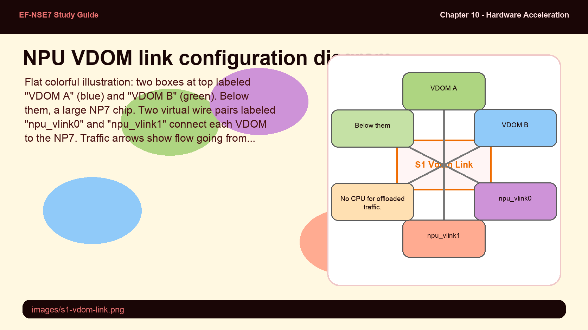
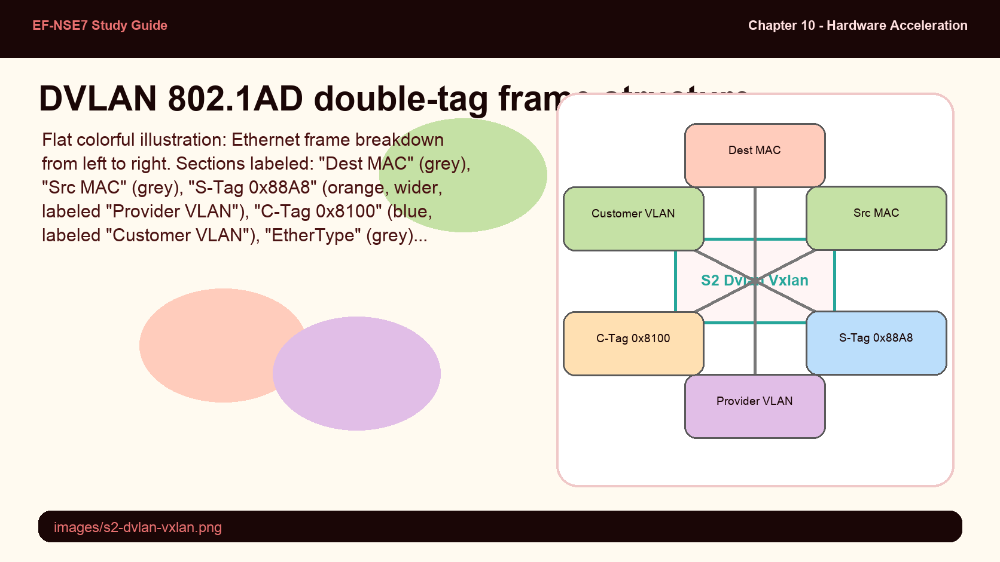
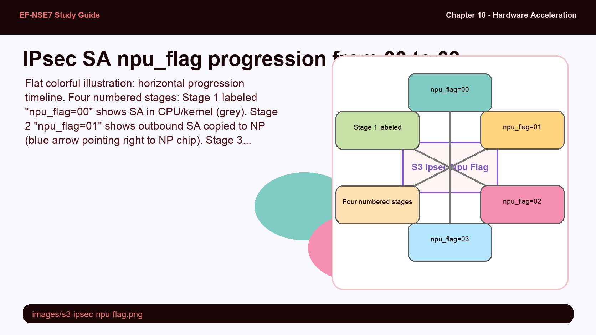
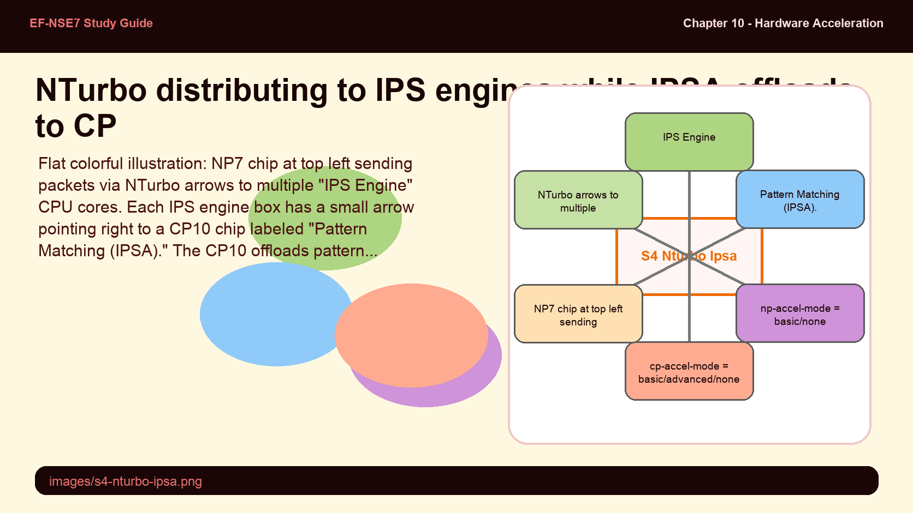
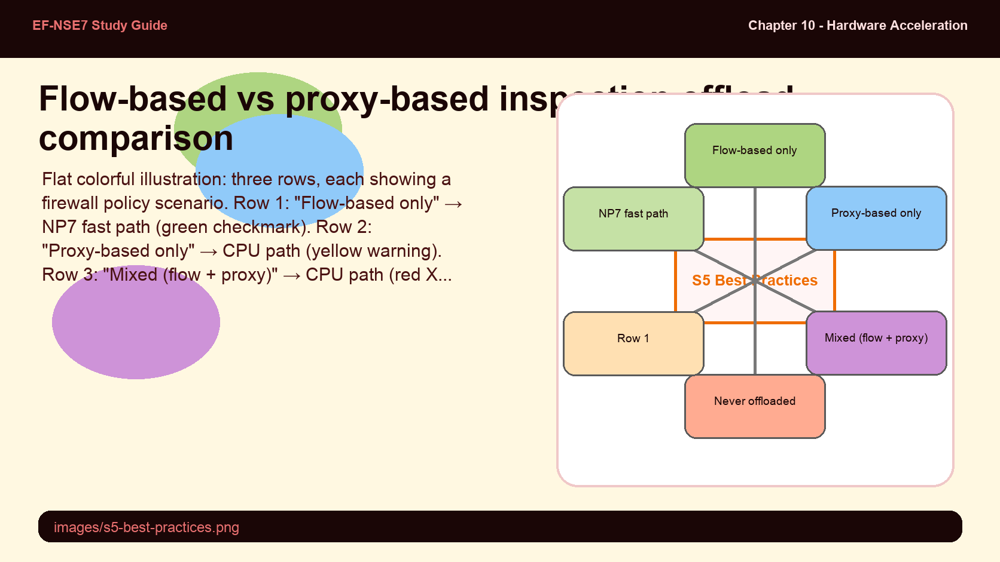

Inter-VDOM traffic on FortiGate passes through virtual links (npu_vlink interfaces). By default, these links are assigned to the root VDOM — meaning inter-VDOM traffic goes through the CPU. Offloading requires reassigning the two sides of a VDOM link to the two different VDOMs that need to communicate.
- Why does inter-VDOM traffic go through the CPU by default even when the FortiGate has NP7 processors?
- What is the naming convention for NPU VDOM link interfaces, and how do you validate that inter-VDOM traffic is actually being offloaded after configuration?
VDOM Link Acceleration via NPU Vlinks

npu_vlink0 assigned to VDOM A, npu_vlink1 assigned to VDOM B — inter-VDOM traffic offloaded through NP7.
FortiGate VDOM links that are associated with an NP processor can be accelerated. The NPU VDOM link interfaces use the naming convention npu_vlink0 and npu_vlink1. By default, all NP VDOM links are assigned to the root VDOM — this means inter-VDOM traffic travels through the CPU.
To enable hardware acceleration for inter-VDOM traffic, assign each side of an npu_vlink pair to a different VDOM:
- Assign npu_vlink0 to VDOM A
- Assign npu_vlink1 to VDOM B
- Create firewall policies on both VDOMs using the npu_vlink interfaces
Once configured, the inter-VDOM traffic is accelerated through the NP processor, bypassing the CPU. You can also extend the number of accelerated inter-VDOM links by creating VLAN subinterfaces over the npu_vlink interfaces — each VLAN creates an additional accelerated path. The VLAN ID must match on both npu_vlink sides.
# Assign npu_vlink interfaces to VDOMs
config system interface
edit "npu0_vlink0"
set vdom "VDOM_A"
set ip 10.10.10.1 255.255.255.252
next
edit "npu0_vlink1"
set vdom "VDOM_B"
set ip 10.10.10.2 255.255.255.252
next
end
# Validate acceleration is active
diagnose sys session list
# Look for: npu info: flag=..., offload=9/9 (code 9 = NP7)auto-asic-offload disable in the firewall policy. Restore it to enable immediately after — leaving it disabled degrades performance for all traffic through that policy.config firewall policy
edit <policy_id>
set auto-asic-offload disable # default is enable
next
endModern data center networks use Q-in-Q (double VLAN) tagging for provider/customer separation, and VXLAN for overlay networking. Without NP hardware support, every tagged frame would require the CPU to strip and re-add tags — at high traffic volumes this is expensive. NP7 and SP5 offload both.
- What is the difference between 802.1AD and 802.1Q DVLAN modes, and which is the NP7 default?
- How can you change the DVLAN mode on a specific NP7 processor rather than globally on all NPs?
DVLAN and VXLAN Offloading

802.1AD double VLAN frame: outer S-Tag (0x88A8, provider) and inner C-Tag (0x8100, customer).
NP7 and SP5 (NP7lite) can offload 802.1AD and 802.1Q double VLAN (DVLAN) tagging as well as VXLAN encapsulation. By default, NP7 handles double VLAN frames using 802.1AD — the provider VLAN tag uses ethertype 0x88A8 (S-Tag) and the customer VLAN tag uses ethertype 0x8100 (C-Tag).
To view the current DVLAN mode setting:
# View current DVLAN mode on all NP7 processors
diagnose npu np7 dvlan-mode-list
# Change DVLAN mode (applies to all NP7 IDs if no dev-id specified)
diagnose npu np7 dvlan-mode 802.1Q # for Q-in-Q with 0x8100 outer
diagnose npu np7 dvlan-mode 802.1AD # for standard provider Q-in-Q
diagnose npu np7 dvlan-mode 802.1Q <dev-id> # per-NP7 processor ID
# On SP5/NP7lite devices:
diagnose npu np7lite dvlan-mode-list
diagnose npu np7lite dvlan-mode 802.1Q <dev-id>IPsec offloading to the NP involves the security associations (SAs) being copied from kernel memory into the NP processor's memory. The npu_flag field in the IPsec SA tracks this progress. A value of 00 means nothing is offloaded; 03 means both inbound and outbound SAs are in the NP — the ideal fully-accelerated state.
- What does npu_flag=20 indicate, and what does that tell you about the IPsec configuration on that tunnel?
- Why are SAs initially loaded to the kernel (npu_flag=00) before being copied to the NP, rather than going directly to the NP when phase 2 completes?
IPsec Encryption Offloading and the NPU-Flag

IPsec SA npu_flag values: 00 (kernel only) → 01 (outbound to NP) → 02 (inbound to NP) → 03 (both offloaded).
FortiGate can offload IPsec encryption and decryption to the NP hardware on supported models. The supported algorithms depend on the NP version and model. By default, hardware offloading is enabled for all supported algorithms. You can disable NP offload per IPsec tunnel with the npu-offload setting.
# Disable NP offload for a specific IPsec tunnel (default: enable)
config vpn ipsec phase1-interface
edit <tunnel_name>
set npu-offload disable # default is enable
next
end
# Disable Diffie-Hellman ASIC offload globally (CP offload for DH exchange)
config system global
set ipsec-asic-offload disable # default is enable
endEach IPsec SA has an npu_flag field that shows its current offload state. Use diagnose vpn tunnel list to inspect it:
| npu_flag Value | Meaning |
|---|---|
| 00 | Both IPsec SAs loaded to kernel only (tunnel up, no NP traffic yet or offload disabled) |
| 01 | Outbound IPsec SA copied to NPU |
| 02 | Inbound IPsec SA copied to NPU |
| 03 | Both outbound and inbound SAs copied to NPU — fully accelerated |
| 20 | Unsupported cipher or HMAC — IPsec SA cannot be offloaded to NP |
check-protocol-header strict) disables ALL NPs, CPs, and SPs globally — useful for testing but must never be left enabled in production. The default is loose.config system global
set check-protocol-header loose # default - basic header checks only
# set check-protocol-header strict # also checks ESP: seq num, SPI, data length
# WARNING: disables ALL NPs, CPs, and SPs
endNTurbo is enabled by default and distributes IPS sessions across multiple IPS engine processes. IPSA (IPS Acceleration) offloads the pattern matching itself to the CP hardware. These two features work together — NTurbo handles session distribution to IPS engines, IPSA offloads the heavy pattern matching from those IPS engines to the CP.
- What is the difference between np-accel-mode and cp-accel-mode in the "config ips global" settings, and what does each control?
- Why is cp-accel-mode set to "basic" on FortiGate devices with a single CP8 chip, while other devices default to "advanced"?
NTurbo and IPSA Configuration

NTurbo (np-accel-mode) distributes sessions to IPS engines; IPSA (cp-accel-mode) offloads pattern matching to CP hardware.
NTurbo (configured via np-accel-mode) distributes flow-based IPS sessions across multiple IPS engine processes, improving IPS throughput. IPSA (configured via cp-accel-mode) offloads the actual IPS pattern matching to CP hardware, reducing CPU load further. Both are enabled by default.
# Configure NTurbo and IPSA acceleration modes
config ips global
set np-accel-mode {none | basic} # basic = default (NTurbo load-balance enabled)
set cp-accel-mode {none | basic | advanced} # advanced = default on most devices
# basic = default on devices with 1x CP8
end
# Disable NTurbo per-policy (for troubleshooting)
config firewall policy
edit <policy_id>
set np-acceleration {disable | enable} # enable is default
next
endThe cp-accel-mode controls IPSA behavior:
- none — All pattern matching handled by CPU, no CP offload
- basic — Redirects flow-based pattern matching requests to CP hardware (default on single-CP8 devices)
- advanced — Offloads more types of pattern matching to CP; default on most devices with CP9/CP10
np-accel-mode none in config ips global. To disable per-policy, use np-acceleration disable in the firewall policy. Both are troubleshooting tools — leaving NTurbo disabled reduces IPS performance significantly.Hardware acceleration and inspection mode are deeply intertwined. Proxy-based inspection never offloads to NP — making it incompatible with the fast path. SSL deep inspection is expensive but can be offloaded to CP hardware to reduce impact. The exam frequently tests when NP offload is blocked and what to do about it.
- A firewall policy has both a flow-based IPS profile and a proxy-based web filter profile applied. Will this session be offloaded to the NP? Why or why not?
- What are four specific conditions that prevent NP offload even when auto-asic-offload is enabled on the policy?
Hardware Acceleration Best Practices

Flow-based inspection enables NP offload. Proxy-based forces CPU path. Mixed policy = always CPU.
Hardware acceleration best practices help maximize throughput especially for entry-level FortiGate models serving as hubs in enterprise networks. The choice of inspection mode is the most critical decision:
Flow-based inspection is the default mode and allows NP offload for eligible sessions. It identifies and blocks threats in real time with lower resource usage. It is recommended for policies prioritizing throughput.
Proxy-based inspection buffers and fully reassembles traffic before inspecting it — enabling more thorough inspection and features like category usage quota. However, proxy-based sessions are never offloaded to the NP and always run through the CPU.
Sessions that will NOT offload to NP even with auto-asic-offload enabled:
- NP acceleration is disabled on the specific firewall policy
- Firewall policy includes any proxy-based security profile
- Firewall policy includes a mix of flow-based and proxy-based profiles
- Session requires a FortiOS session helper
- Tunneling is enabled (SSL VPN, GRE — except IPsec VPN, which can offload)
SSL Deep Inspection best practices to minimize performance impact:
- Limit the number of policies that allow encrypted traffic requiring SSL inspection
- Deploy SSL inspection gradually rather than enabling it everywhere at once
- Apply SSL deep inspection only where truly needed — exempt known-trusted traffic
- Use hardware acceleration (CP9/CP10) to offload SSL processing to content processors